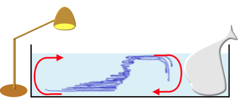
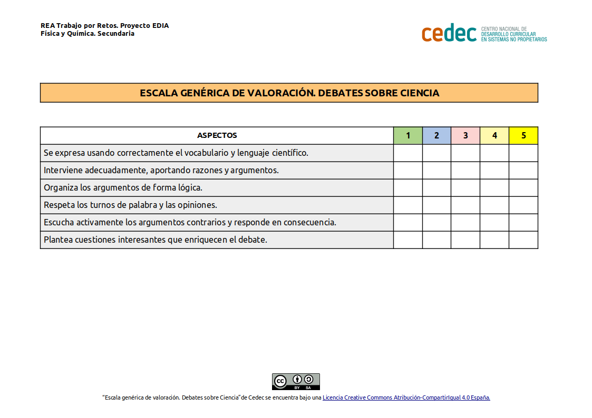

La cinta transportadora oceánica

¿Sabemos que existe una gigantesca corriente profunda que recorre todos los océanos del planeta y que es vital para la regulación del clima en la Tierra? Conocemos a la gran Cinta Transportadora Oceánica (CTO) o Circulación termohalina.
La circulación profunda del océano es un mecanismo natural de transporte de calor a escala planetaria. Pero, ¿tenemos claro cómo se produce? Vamos a investigarlo.
La temperatura y las corrientes marinas
- Duración:
- Dos sesiones
- Agrupamiento:
- Individual, pequeño y gran grupo
En esta tarea vamos a investigar experimentalmente cómo influye la temperatura en las corrientes marinas, para ello vamos a realizar cuatro actividades, para al final debatir sobre los resultados obtenidos. Realizaremos las actividades por grupos y anotaremos nuestras investigaciones en el diario de investigación
Actividad 1: Recabamos información
Empezamos por informarnos en qué consiste la cinta transportadora oceánica par ello vemos el siguiente vídeo
- ¿Qué os ha llamado la atención?
Aclaración: El patrón de circulación se genera por los cambios en la temperatura y la salinidad del agua que alteran su densidad. El agua salada es más densa que el agua dulce y el agua fría es más densa que el agua caliente. Por lo tanto, el agua salada es más densa que el agua dulce y cálida.
El agua con mayor densidad tiende a hundirse hasta el fondo del océano, mientras que el agua menos densa permanece en la superficie.
Actividad 2: Investigando la temperatura y la densidad en las corrientes marinas
¿ Cómo reaccionan los océanos a los climas calientes o fríos del planeta?
Vamos a realizar un experimento para comprobar el efecto de la temperatura en la densidad del mar. Recordamos que debemos anotar las experiencias y resultados en nuestro cuaderno de investigación ya que al final cotejaremos los resultados obtenidos.
¡Vamos al laboratorio!
Materiales y producto
Necesitaremos los siguientes elementos:
- Un recipiente rectangular con un separador
- Dos vasos de precipitados con agua del grifo a temperatura ambiente
- Colorante alimentario (de dos colores diferentes)
- Hielo
- Sal
- Una cuchara
Procedimiento
¿ Cómo reaccionan los océanos a los climas calientes o fríos del planeta?
- Rellena un vaso con agua caliente y el otro con agua enfriada con cubitos de hielo.
- Añade unas gotas de colorante alimentario a cada vaso (diferente color en cada vaso).
- Vierte el agua caliente en un compartimento del recipiente y el agua fría en el otro.
Hipótesis y comprobaciones
Empezamos con nuestras hipótesis
| ¿Qué crees que sucederá cuando quites el separador? ¿Por qué? |
Quita el separador . ¿Qué sucede? |
¿Coincide con tu predicción? |
Después de observar el nuevo equilibrio en el recipiente, coloca las yemas de los dedos en la superficie del fluido y sumerge lentamente la mano hacia el fondo, ¿notas la variación de temperatura?
|
Comprobamos la temperatura |
- Sí en el vaso de agua caliente añadieses dos cucharadas de sal y repitieses el experimento ¿Qué pasará?
Comprobamos la salinidad
|
¿Qué crees que sucederá cuando quites el separador? ¿Por qué? |
Quita el separador ¿Qué sucede? |
¿Coincide con tu predicción? |
Actividad 3: Investigamos el movimientos de las moléculas con la temperatura
¿Cómo afecta el calor a las moléculas?
Sabemos que la energía térmica influye en el movimiento de las moléculas: cuando un objeto está caliente, las moléculas se mueven rápido. Cuando hace frío, se mueven lentamente. Vamos a investigar cómo actúan las moléculas en temperaturas frías, calientes y cálidas.
Realizamos el siguiente experimento en el laboratorio:
Materiales
¿Qué necesitamos? No olvidemos el cuaderno de investigación
- 3 tarros transparentes
- Agua
- Colorante alimenticio
- Cinta adhesiva
- Marcadores
- Termómetro.
Procedimiento
- Llenamos un frasco transparente con agua a temperatura ambiente. Usamos la cinta de adhesiva y los marcadores para etiquetar este frasco como 'Temperatura ambiente'.
- Llenamos otro frasco transparente con agua fría del grifo a la misma altura que el anterior. Agregamos cubitos de hielo para que esté aún más frío o lo colocamos en el frigorífico. Etiquetamos este frasco como 'Agua fría'.
- Llenamos el último frasco transparente con agua caliente del grifo. Incluso podemos calentar el agua en el microondas. Luego etiquetamos este frasco como 'Agua caliente'.
- Comprobamos que los tres frascos tienen la misma altura de agua. Finalmente agregamos una gota de colorante alimentario a cada frasco y observamos lo que sucede con el tiempo. Previamente planteamos nuestra hipótesis
Hipótesis y comprobaciones
|
¿Qué crees que sucederá? ¿Por qué?
|
¿Qué sucede?
|
¿Coincide con tu predicción?
|
Actividad 4 : Simulamos las corrientes del océano
Vamos a simular lo que sucede con las corrientes en el océano debido a la temperatura, gravaremos o sacaremos fotografías de la simulación. Al final entre todos elegiremos la mejor simulación y la subiremos a la web de centro.
En el laboratorio, vemos qué necesitamos y planificamos cómo lo hacemos
Materiales
- Recipiente transparente de vidrio, tipo acuario, con agua a temperatura ambiente.
- Lámpara, que emita calor.
- Bolsa de plástico con hielo
- Colorante alimentario
- Móvil o cámara de fotos
Procedimiento
Con la lámpara que calienta podemos simular el sol, en un extremo del recipiente. Aquí están las latitudes tropicales. En el otro extremo del recipiente simulamos la región ártica con agua helada, para ello metemos en el agua la bolsa con hielo o un trozo de hielo grande.
Encendemos la lámpara y añadimos una gota de colorante, para hacer visible el movimiento de la circulación, esperamos un poco:
Realizamos unas fotografías en diferentes tiempos o un pequeño vídeo.

Hipótesis
- ¿Cómo se moverá el colorante? ¿Cuál es tu hipótesis?
- ¿Las fotografías te sirven para justificar tu hipótesis?
Comprobar vuestros resultados en el vídeo explicativo.*
Conclusiones y debate
En grupo, reflexionamos y preparamos el debate teniendo en cuenta las siguientes cuestiones:
- En las actividades realizadas ¿los resultados han sido los esperados? Si no es así, ¿por qué puede ser?
- ¿Qué dificultades hemos encontrado en las actividades?
- Comparamos resultados con el resto de los grupos y comprobamos si todos hemos tenido las mismas dificultades.
Explicación: Después de un tiempo corto, el colorante se moverá con la circulación. En la superficie los movimientos de agua del lado más tibio (trópicos) hacia la bolsa de hielo (mar polar del norte). Aquí, el agua se hunde. En la capa del fondo el movimiento va en sentido contrario. El agua profunda formada cerca del hielo fluye de vuelta a los trópicos.
Evaluación y reflexión
Una vez que hemos finalizado la tarea, es un buen momento para reflexionar en nuestro diario de aprendizaje. Algunas sugerencias pueden ser:
- ¿Qué he aprendido?
- ¿Qué me ha sorprendido más de todo el proceso? ¿Por qué?
- ¿He cambiado alguna idea previa? ¿Cuál?
- ¿Qué me ha resultado más difícil? ¿Por qué?
Evaluación
Para la evaluación utilizaremos las siguientes escalas
1.-Escala para el trabajo en el laboratorio (descargar en formato editable odt y pdf)

2.-Escala de valoración de debates sobre ciencias (descargar en formato editable odt y pdf).
